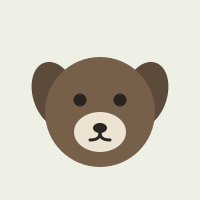
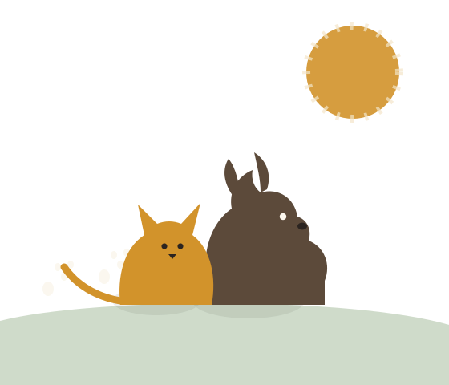

Buddy
Gentle and food-motivated, Buddy is house-trained and loves long walks. Good with children and other dogs.
Enquire about BuddyPaws & Hope rescues, fosters and rehomes abandoned and at-risk companion animals across Johannesburg, and helps the community keep pets safe, healthy and loved.
Meet Our Animals Get Involved
Tell us about your home and lifestyle using our enquiry form.
Spend time with your potential new companion at the shelter or a foster home.
A quick, friendly visit to make sure your home is a safe fit.
Finalise the adoption and take your new best friend home.

Gentle and food-motivated, Buddy is house-trained and loves long walks. Good with children and other dogs.
Enquire about BuddyCurious and affectionate once she trusts you. Nala would do best as an only cat with a patient owner.
Enquire about NalaLitter-trained and sociable, Thistle needs a secure hutch or bunny-proofed indoor space and daily attention.
Enquire about Thistle